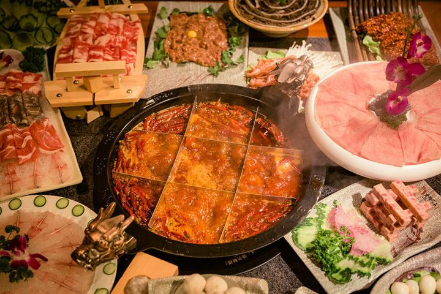
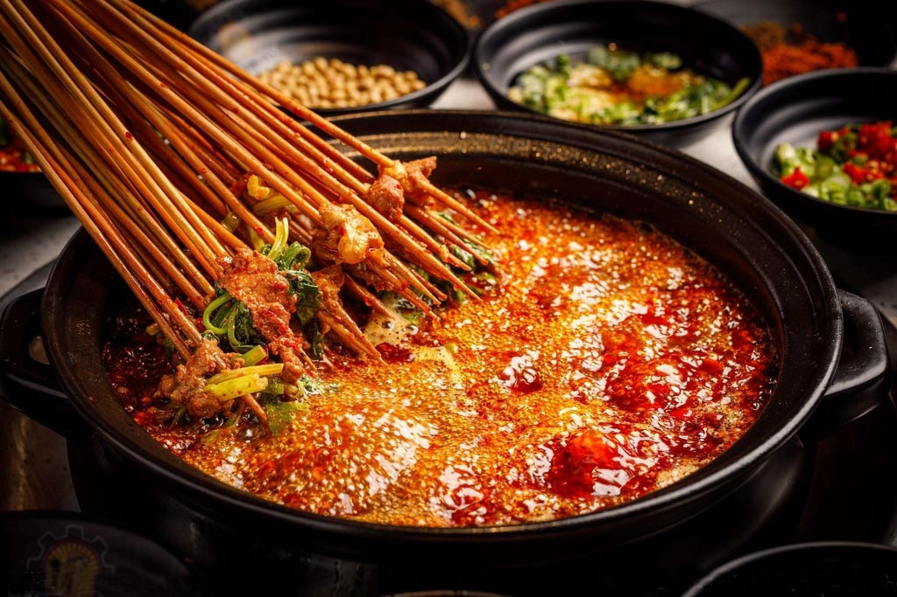
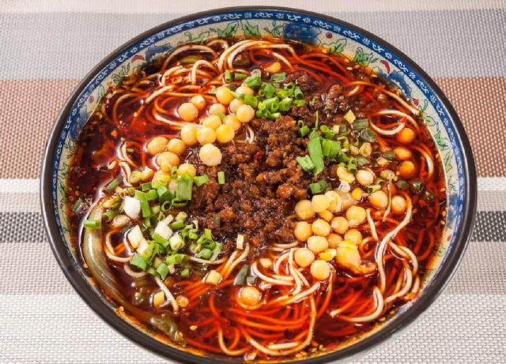
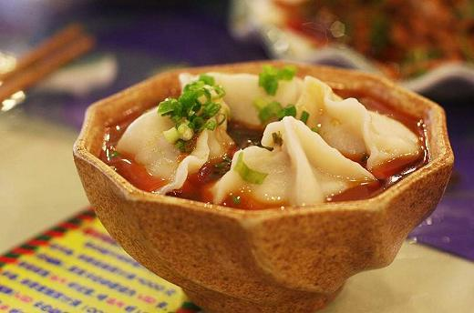
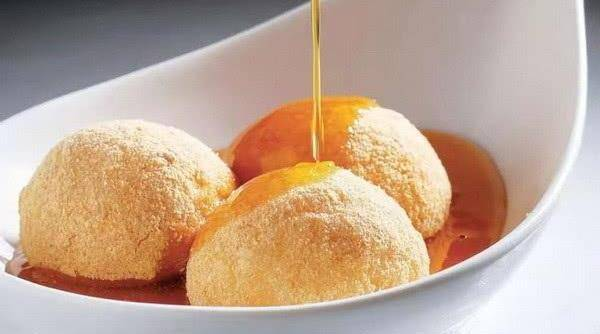

麻辣鲜香 · 必吃榜首
成都火锅
牛油翻滚、椒香四溢，毛肚鸭肠“七上八下”。一桌人围坐沸腾红汤，边涮边聊，是成都人最热闹的社交语言。
一锅红汤煮沸人间烟火，舌尖上的成都最抚凡人心

牛油翻滚、椒香四溢，毛肚鸭肠“七上八下”。一桌人围坐沸腾红汤，边涮边聊，是成都人最热闹的社交语言。

竹签串起万物，荤素任君挑选，按签计费。一口一串，就着冰镇啤酒，是成都街头最具烟火气的美食之一。

面条筋道、臊子香浓，红油与花椒在碗中碰撞出川味灵魂。一碗下肚，麻辣鲜香在舌尖层层绽放、满口回甘。

皮薄如纸、馅嫩如云，红油与清汤皆宜。清晨一碗龙抄手，是成都人开启一天最温柔的仪式。

纯肉馅，红油微甜，成都传统名小吃。皮薄馅大、酱香浓郁，一口一个停不下来。

糯米裹豆粉，红糖浇汁，自带“砰砰砰”表演的甜品。香糯甜润，是老成都庙会的人气主角。